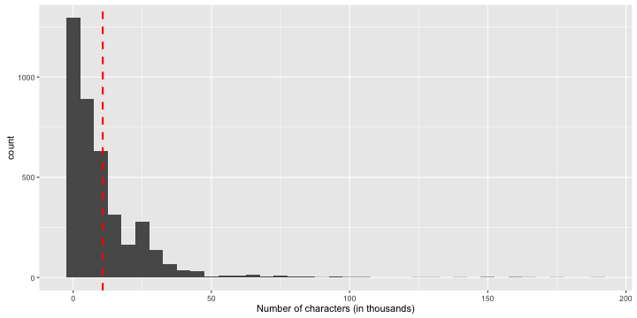
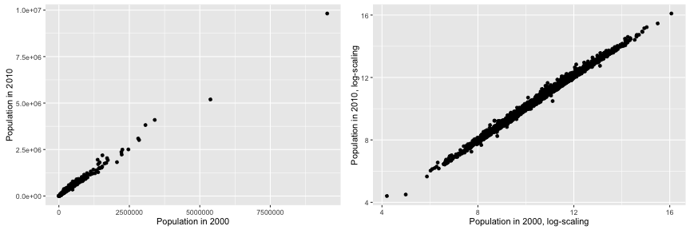
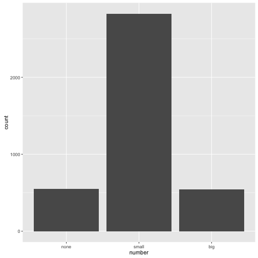

- Every Wednesday 19:00 - 21:00
- Slides: http://nikolaypavlov.github.io/da-workshops-2/
- Skype Chat: https://join.skype.com/gjN0CfAd4bhg
- Reference Book: https://www.openintro.org/stat/textbook.php
- ggplot2 Documentation: http://docs.ggplot2.org
- Install the following packages: openintro, ggplot2, grid
Data Analysis with R
Exploratory Statistics
Mykola Pavlov
Data Scientist at Azzurro.io
Course Logistic
Topics
- Objectives
- How Does a Plot Get Created? (Special topic)
- Scatterplot
- Dotplot, Distribution, Mean
- Histogram, Variance, Standard Deviation, Skew, Mode
- Box plots, quartiles, median, IQR
- Data transformation (Special topic)
- Bar plots, contingency tables, proportions
Objectives of exploratory data analysis
- Get understanding of the data
- Reveal structure and patterns
- Consider some models "to try next"
- Debug
How Does a Plot Get Created?
R creates plot on specific graphics device:
- Screen device: quartz(), windows(), x11().
- File device: PDF, PNG, JPEG, SVG...
By default plot() in base, xyplot() in lattice, or qplot() in ggplot2 use screen device.
Try help(Devices) for more information
Example
- Open PNG device
- Create plot, send to a file
- Annotate
- Close device
png(file = "email.png")
plot(num_char ~ line_breaks, data=email)
title(main = "Number of lines versus number of characters in email")
dev.off()
## quartz_off_screen
## 2
ggplot2 basic principles
An implementaon of the Grammar of Graphics by Leland Wilkinson
Describe a statistical plot in several consecutive steps:
- data (data frame)
- aesthetic mappings (size, shape, color...)
- geometric objects (points, lines, polygon...)
- scales
- facet specification
- statistical transformations
- the coordinate system
Together, the data, aes, stat transform and geom form a Layer
Scatterplot
library(ggplot2)
qplot(num_char, line_breaks, data=email50, geom="point",
xlab="Number of Characters (in thousands)", ylab="Number of Lines")

Exercise
Does the HTML format affect the size of email?
Add color or facet to prevous plot.
Useful arguments and functions: color, facets, factor(), help(qplot)
Dotplot, mean, distribution
p <- ggplot(email50, mapping=aes(x=num_char)) +
geom_dotplot(binwidth = 1.5, method="histodot") +
geom_point(data=data.frame(x=mean(email50$num_char), y=-0.1),
aes(x, y), colour="red", size=8, shape=17) +
geom_hline(yintercept=0, size=1, color="black") +
scale_x_continuous(name ="Number of characters (in thousands)") +
scale_y_continuous(name = "", breaks = NULL)
p

Histogram, variance, standard deviation
p <- ggplot(email, mapping=aes(x=num_char)) +
geom_histogram(binwidth=5) +
geom_vline(xintercept=mean(email$num_char), linetype="dashed", colour="red", size=1) +
scale_x_continuous(name="Number of characters (in thousands)")
p

Box plots, quartiles, median, IQR

Exercise
Create boxplot of the num_char var using ggplot2
- Set appropriate Y axis label
- Clean up X axis, set limits, remove breaks
- Fill box with color
- Set main title for the plot
Get the summary statistics of the num_char var
Try summary() function
Transformations (special topic)
Reasons:
- Easy to visualize and understand
- Stat/ML algorithm requirement
- Domain standard
Some common transforms: log, square root, inverse, power (Box-Cox), z-norm, Fourier
Example Log transformation
library(grid)
p1 <- qplot(pop2000, pop2010, data=county, xlab="Population in 2000", ylab="Population in 2010", na.rm=T)
p2 <- qplot(log(pop2000), log(pop2010), data=county,
xlab="Population in 2000, log-scaling", ylab="Population in 2010, log-scaling", na.rm=T)
pushViewport(viewport(layout = grid.layout(1, 2)))
print(p1, vp = viewport(layout.pos.row = 1, layout.pos.col = 1))
print(p2, vp = viewport(layout.pos.row = 1, layout.pos.col = 2))

Contingency tables, proportions and bar plots
Frequency table
num_freq_table <- table(email$number)
addmargins(num_freq_table, 1)
##
## none small big Sum
## 549 2827 545 3921
spam_freq_table <- table(email$spam)
addmargins(spam_freq_table, 1)
##
## 0 1 Sum
## 3554 367 3921
Bar plots
qplot(number, data=email, geom="bar")

Contingency table
ctable <- table(email$spam, email$number, dnn=c("Spam", "Number"))
addmargins(ctable)
## Number
## Spam none small big Sum
## 0 400 2659 495 3554
## 1 149 168 50 367
## Sum 549 2827 545 3921
Proportions
Row proportions
prop.table(ctable, 1)
## Number
## Spam none small big
## 0 0.1125492 0.7481711 0.1392797
## 1 0.4059946 0.4577657 0.1362398
Column proportions
prop.table(ctable, 2)
## Number
## Spam none small big
## 0 0.72859745 0.94057305 0.90825688
## 1 0.27140255 0.05942695 0.09174312
Exercise
- What does 0.457 represent in the row proportions table?
- What does 0.059 represent in the column proportions table?
Homework
- Lab 1 - Introduction to data
- Skype Chat for discussions: https://join.skype.com/gjN0CfAd4bhg
- Reading: OpenIntro Statistics Chapter 1, p. 1.6 till the end of chapter
- ggplot2 Docs: http://docs.ggplot2.org/
- A Layered Grammar of Graphics by Hadley Wickham
- Reference Book: https://www.openintro.org/stat/textbook.php